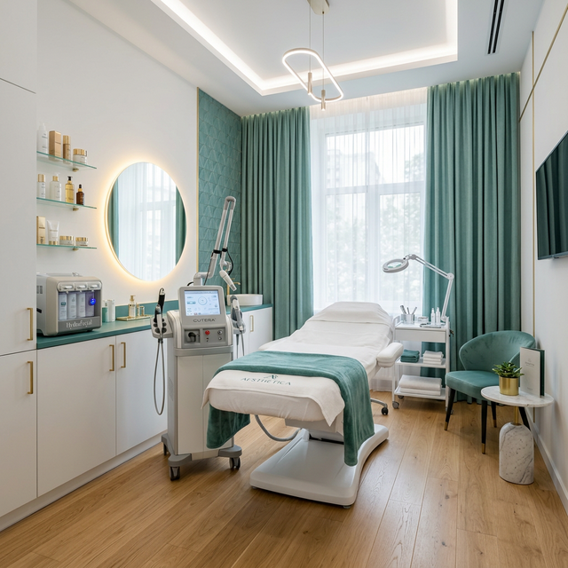

Treatment medis untuk kulit kusam, tone tidak merata, dan flek ringan–sedang. Semua berdasarkan analisa kulit langsung oleh dokter kami.
Konsultasi via WhatsApp
Jika kamu mengalami salah satu masalah berikut, Brightening Program Emdee bisa menjadi solusi yang tepat.
Kulit terlihat tidak bercahaya meski sudah merawat rutin di rumah.
Terdapat perbedaan warna antara area wajah – pipi, hidung, atau dahi.
Bekas paparan sinar matahari atau perubahan hormonal yang membuat kulit belang.
PIH (Post-Inflammatory Hyperpigmentation) yang sulit hilang hanya dengan skincare.
Tidak ada paket generik. Semua disesuaikan dengan kondisi kulit kamu yang unik.
Dokter melakukan analisa mendalam – jenis kulit, masalah utama, riwayat perawatan, dan sensitivitas.
Dokter menyusun kombinasi treatment yang sesuai dengan kondisi kulit kamu – bukan template yang sama untuk semua orang.
Kamu akan mendapat panduan perawatan pasca-treatment dan jadwal kontrol untuk memastikan hasil optimal.
"Rekomendasi disesuaikan kondisi kulit, bukan paket generik."
Dokter akan menentukan kombinasi terbaik berdasarkan analisa kulit kamu. Ini bukan klaim, tapi gambaran opsi yang tersedia.
Teknologi cahaya untuk mengurangi hiperpigmentasi dan meratakan tone kulit.
Mempercepat regenerasi sel kulit dan memudarkan bekas flek atau jerawat.
Deep cleansing dan nutrisi intensif untuk memulihkan kecerahan natural kulit.
Hidrasi mendalam dari dalam kulit untuk tampilan lebih plump dan bercahaya.
* Metode yang digunakan akan ditentukan berdasarkan hasil konsultasi dan analisa kulit oleh dokter.
Jalan Puncak Indah Lontar No.2,
Lantai LG 29–30, Surabaya
10.00 – 22.00 WIB (Setiap hari)
Admin PTC: +62 851-7984-5855
Hal yang sering ditanyakan sebelum booking.
Sangat disarankan untuk reservasi terlebih dahulu via WhatsApp agar tidak menunggu antrian dan dokter bisa mempersiapkan waktu konsultasi yang optimal untuk kamu.
Konsultasi awal biasanya berlangsung 20–40 menit termasuk analisa kulit, diskusi masalah, dan penjelasan rencana treatment. Durasinya bisa berbeda tergantung kondisi kulit.
Untuk beberapa treatment memungkinkan dilakukan di hari yang sama setelah konsultasi. Namun untuk treatment tertentu, dokter mungkin menjadwalkan di sesi berikutnya untuk persiapan yang lebih optimal.
Ya. Konsultasi dan analisa kulit justru penting untuk kamu yang punya kulit sensitif. Dokter akan menyesuaikan metode dan intensitas treatment agar sesuai dan aman untuk kondisi kulitmu.
Harga bervariasi tergantung hasil analisa dokter dan jenis treatment yang direkomendasikan. Chat admin PTC untuk informasi lebih lanjut – konsultasi dokternya sendiri tidak dipungut biaya.
Hubungi admin Emdee PTC sekarang – tanpa antrian panjang, langsung ke orangnya.
Chat Admin Emdee PTC – Booking Sekarang